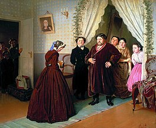

Гувернёр (фр. gouverneur — «управляющий») или гувернантка (в зависимости от пола)[1], также бонна (фр. bonne — няня), если речь идёт о женщине, нанятой воспитательницей детей в семье. В отличие от няни, воспитывает детей более старшего возраста и занимается с ними определёнными учебными предметами (прежде всего, иностранным языком).
